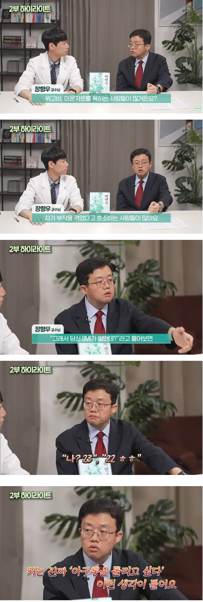

160에 40kg같은 뼈말라가 진단서 대충 떼주는 병원 가서 마운자로 사오고, 이런 걸 막아야 하는데 이상한 곳을 잡고 있음 ㅋㅋ

160에 40kg같은 뼈말라가 진단서 대충 떼주는 병원 가서 마운자로 사오고, 이런 걸 막아야 하는데 이상한 곳을 잡고 있음 ㅋㅋ
원래 그럼. 근데 병원들이 대충 허벌창으로 내줌 그냥
마운자로 싸게 하는데 가면 진짜 진료 1분컷에 사람 줄서있는데 거기중 절반이상이 여성인데 누가봐도 말랐는데 위고비 받아가더라
건보에서 위고비만 넣지마라 ㅋㅋ 다들 그거 바라는 거 같은데 ㅋ 세금 낭비다 ㅋ
마운자로는 되고 위고비는 세금낭비란 말임?
비만약을 건강보험으로 해주는게 압도적으로 효용성이 클거다 당뇨 관절 혈관건강 비만으로 진짜 당뇨오고 인공관절오고 심혈관질환오기 전에 선제적으로 해주는게 압도적으로 싸지 그사람들이 사회에서 관계를 이루면서 살면서 발생하는 부가가치도 훨씬 큰데 병신이 되고 난뒤에 보험빨아먹는게 압도적 비효율이지
ㄹㅇ 길거리에서 씹돼지 안보고 마르고 예쁜 여자들 넘치면 그게 더 이득 아닌?
한국에서 돈 쓰는 일이 결국 돈낭비로 끝나는거 한두번 봄?
어디까지가 약이고 어디까지 미용일지 확실해요? 나중에는 뒷구멍으로 다 위고비 처방할걸요
심평원이 죠스로 보여여? 그렇게 죠스였으면 의사들이 심펑원에 바득바득 이를 갈자도 않았을거에여
죠스로 봤으니 척추까기 백내장 수술 존나 해댄거아님?
꽁으로 다이어트 하고싶은 돼지새끼들 존나 많네 ㅋㅋㅋㅋ 저거 맞는애들중에 니가 말한 애들 몇프로나 될거같냐 ㅋㅋㅋ 건강보험 적용되면
진짜 비만용 처방은 5%미만이고 95%는 그냥 살빼고싶은 다이어터들
오히려 건보 적용되면 체지방률 bmi 적용 기준이 잡히겠지
그거 있다고 편법 없울거같음? ㅋㅋㅋ
하와와. 심평원은 죠스가 아니에요.
대한민국에서 지구 끝까지 따라가는 수전노 단체가 두 개 있는데요, 하나가 국세청이고, 다른 하나가 심평원이에여. 암환자 요양급여도 얄짤없이 깎아버리는 아주아주 지독한 노랭이랍니다.
그래서 의사들이 심평원이라면 아주 치를 떨어용. 개붕쿤한테 청구되어야 할 금액이 15,000원이고, 약값이 3천원이라고 가정 해 보아요. 의원급 본인부담률이 보통 30%니까 병원에서는 개붕쿤한테 4500원을 받고, 약값으로는 900원을 받겠죵?
그리고 나머지 70%금액을 건강보험 공단에 청구를 해 받습니당. 근데 심평원이 생각하기에 아니 싯팔 니들 이거 과잉진료 아니냐, 과잉검사 아니냐 나 돈 못줘! 이래버려여. 이미 돈은 환자한테 30%만 받았는데! 환자한테 전화해서 아 심평원이 삭감해쓰니 나머지 돈 내노십쇼 할 수도 없자나여?
약은 더 얄짤이 없서여. 야 너 원외처방한거 조건이 안되는거 같은데? 야, 약국한테 준 돈 담에 너 줄거에서 깐다? 에. 그렇습니다.
오히려 비급여인 게 의사들은 더 노나는거에요! 처방비도 내 ㅈ대로 지정해서 받을 수 있구요, 미리 고지만 하면 원내에서 처방해서 약값을 만원쯤 더 비싸게 받을 수 있거든요! 그래서 병원을 가면 자꾸 비급여 주사를 권하는거에요.
심평원이 눈을 불알, 아니 부라리고 있는데 편법 처방을 과연 받을 수 있을까용? 암 등의 질병에 효과적인 신약들도 안 심하다고 비급여 땅땅, 삭감 땅땅 때리는데여?
호오옥시 나비약 등 펜터민 오남용 얘기 할거면 그거 비급여인데스와
그리고 댖지들은 약을 꽁으로 퍼다 멕여서라도 살을 빼게 채찍질을 찰싹찰싹 해야대여. 왜냐구여? 당뇨가 생겨서 인슐린을 맞게 되면 의료비 지원과 별도로 혈당 측정기, 인슐린 구입비 등등 소모품 비용을 최대 1일 2500원씩 지원해주고 있거든여!
인슐린 투여 당뇨환자 한 명당 최소 30만원에서 연간 최대 91만 2500원의 소모품 구매 지원이 별도로 나가고 있는데스와.
시발 향정신성 약품도 아니고 비급여라 국가재원 단 하나도 안받는데 규제만 존나많음 ㅋㅋ
아구통돌리기 전문가 ㄷㄷ
23이면 맞을만은함 나도 23에 맞았는데 ㅋㅋ
아구통 맞아라
Bmi 몇개 이상만 사게하면 되지